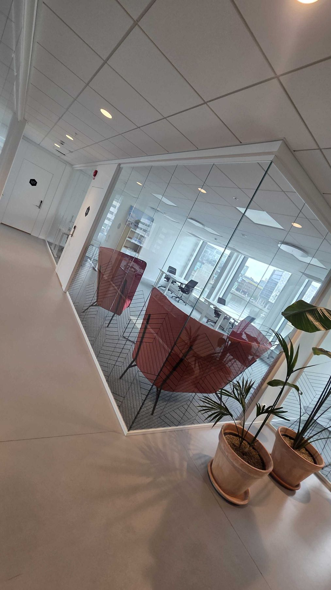
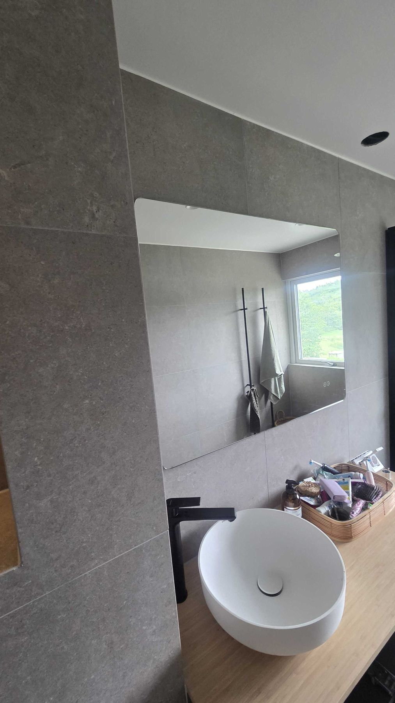

Om oss
Med er hela vägen
Kompetens, noggrannhet och tydlighet – i varje projekt, stort som litet.

5/5i omdömenOm Västkust Bygg
Ett byggföretag med kompetens
Västkust Bygg & Montage AB är med er hela vägen, från idé till färdigt projekt. Vi erbjuder en helhetslösning där kompetens, noggrannhet och tydlighet är viktiga faktorer för oss. Vår erfarenhet och expertis inom byggbranschen gör oss till det optimala valet för ditt projekt.
Vår unika helhetslösning skiljer oss från konkurrenterna. Genom att integrera kompetens, noggrannhet och tydlighet levererar vi enastående resultat som överträffar förväntningarna. Vårt dedikerade team står redo att ta ansvar och säkerställa att varje projekt blir en framgång.
Västkust Bygg & Montage AB:s hantverkare har lång erfarenhet inom byggbranschen, vilket gör oss till en pålitlig partner för ditt projekt. Vi strävar alltid efter att leverera högkvalitativt arbete och nöjda kunder.
- Arbetsledare
- Emanuel Ström
- Område
- Göteborg och Kungsbacka
- Våtrum
- Behörig enligt BBV
- Försäkring
- Länsförsäkringar
- Arbetsplats
- ID06 och personalliggare
- Öppettider
- Måndag–fredag 08.00–17.00
Varför arbeta med oss
Vår unika företagsidentitet
Västkust Bygg & Montage AB:s hantverkare har lång erfarenhet inom byggbranschen, vilket gör oss till en pålitlig partner för ditt projekt. Vi strävar alltid efter att leverera högkvalitativt arbete och nöjda kunder.
Skickliga hantverkare
Vi har ett team av skickliga hantverkare som är experter inom sitt arbete och levererar högkvalitativa resultat med precision och noggrannhet.
Innovativa lösningar
Vi strävar efter att implementera innovativa lösningar och tekniker i våra projekt för att säkerställa effektivitet, hållbarhet och modern design.
Kundanpassad service
Vår kundanpassade service innebär att vi lyssnar aktivt på våra kunders önskemål och behov för att skapa skräddarsydda lösningar som överträffar deras förväntningar.
Så går det till
Från idé till färdigt projekt
- 01
Idé och kontakt
Du ringer, mejlar eller fyller i formuläret och berättar vad du vill göra.
- 02
Besök och offert
Vi tittar på plats och lämnar en skräddarsydd offert med vad som ingår.
- 03
Vi bygger
En kontaktperson, tydlig tidplan och ordning och reda på arbetsplatsen.
- 04
Klart och dokumenterat
Gemensam genomgång – och för våtrum ett kvalitetsdokument enligt BBV.
Omdömen